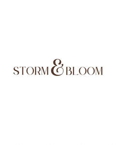

Trade Mark Journal No.2026/003 16 January 2026
UK00004309689 12 December 2025 (21,25,30,35,41,43)

- Class 21
- Coffee mugs; Coffee cups; Coffee stirrers.
- Class 25
- Yoga pants; Jogging pants; Pants; Sports pants; Gym shorts; Lounge pants; Moisture-wicking sports pants; Warm-up pants; Sweat pants; Maternity pants; Yoga shoes; Jogging bottoms [clothing]; Leggings [trousers]; Track pants; Yoga shirts; Gym suits; Yoga bottoms; Trousers for sweating; Yoga socks; Yoga gloves ; Jogging shoes; Shorts [clothing]; Training shoes; Jogging sets [clothing]; Jogging bottoms; Jogging outfits; Yoga tops; Sweat shorts; Clothes for sport; Maternity shorts; Maternity leggings; Clothes for sports.
- Class 30
- Coffee; Coffee drinks; Chocolate coffee; Iced coffee; Decaffeinated coffee; Mixtures of malt coffee with coffee; Coffee beans; Coffee (Unroasted -); Unroasted coffee; Coffee essences for use as substitutes for coffee; Coffee beverages; Malt coffee; Coffee extracts for use as substitutes for coffee; Coffee capsules; Coffee beverages with milk; Coffee pods; Coffee substitutes [artificial coffee or vegetable preparations for use as coffee]; Coffee bags; Flavoured coffee; Mixtures of malt coffee extracts with coffee; Coffee flavourings; Unroasted coffee beans; Caffeine-free coffee; Cappuccino; Coffee, teas and cocoa and substitutes therefor; Drip bag coffee; Coffee flavorings; Coffee oils; Espresso; Coffee essences; Roasted coffee beans; Mixtures of coffee; Coffee mixtures; Instant coffee; Coffee based drinks; Coffee extracts; Beverages with coffee base; Beverages with a coffee base; Ground coffee beans; Substitutes (Coffee -); Coffee substitutes; Aerated drinks [with coffee, cocoa or chocolate base]; Ground coffee; Beverages made from coffee; Beverages made of coffee; Black tea [English tea]; Mixtures of coffee essences and coffee extracts; Sugar-coated coffee beans; Mixtures of malt coffee with cocoa; Chicory for use as substitutes for coffee; Mixtures of coffee and chicory; Chicory [coffee substitute]; Chai tea; Ice beverages with a coffee base; Mixtures of coffee and malt; Powdered coffee in drip bags; Tea; Freeze-dried coffee; Coffee concentrates; Coffee in whole-bean form; Aerated beverages [with coffee, cocoa or chocolate base]; Malt coffee extracts; Iced tea; Tea (Iced -); Coffee based beverages; Tea beverages with milk; Coffee essence; Coffee capsules, filled; Barley for use as a coffee substitute; Coffee [roasted, powdered, granulated, or in drinks]; Danish pastries; Prepared coffee beverages; Coffee in brewed form; Prepared coffee and coffee-based beverages; Chocolate bark containing ground coffee beans; Tea beverages; Extracts of coffee for use as flavours in beverages; Tea pods; Oolong tea [Chinese tea].
- Class 35
- Sales promotions at point of purchase or sale, for others.
- Class 41
- Pilates instruction; Exercise and fitness classes; Exercise classes; Fitness and exercise instruction; Exercise [fitness] training services; Keep-fit instruction; Conducting fitness classes; Aerobic and dance facilities; Health and fitness training; Exercise [fitness] advisory services; Fitness training services; Health club services [exercise]; Sports and fitness; Personal trainer services [fitness training]; Health club services [health and fitness training]; Sports and fitness services; Fitness club services; Health and fitness club services; Health club [fitness] services; Providing fitness and exercise facilities; Personal fitness training services; Physical fitness centre services; Health and wellness training; Physical fitness education services.
- Class 43
- Coffee shops; Coffee shop services; Coffee bar services.
Storm & Bloom LTD